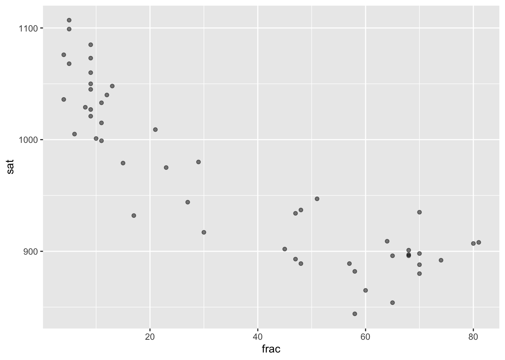
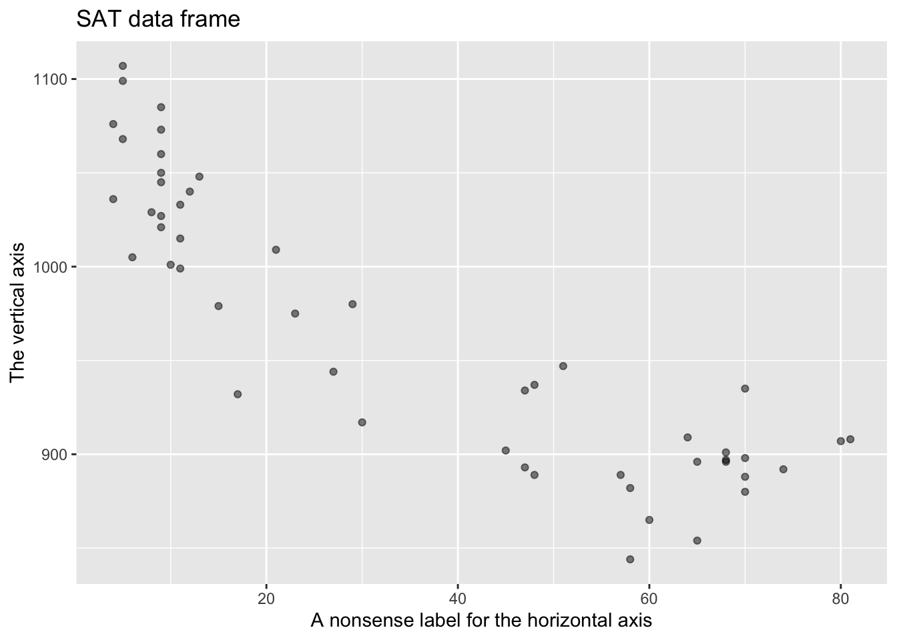

Nats |>
mutate(GDPpercap = GDP / pop) |>
filter(GDPpercap > mean(GDPpercap), .by=year) -> High_income_countries6 Computing with functions and arguments
You have already seen the R command patterns that we will use throughout these Lessons: pipelines composed of actions separated by |>, named data frames, functions and their arguments. This Lesson recapitulates and explains those patterns, the better to help you construct your own commands. The Lesson also emphasizes a small technical vocabulary that helps in communicating with other people to share insights and identify errors.
Learning command patterns is a powerful enabler in statistical thinking. The computer is an indispensable tool for statistical thinking. In addition to doing the work of calculations, computer software is a medium for describing and sharing with others statistical techniques and concepts. For instance, three fundamental operations in statistics—randomize, repeat, collect—are easily written in computer languages but have no counterpart in the algebraic notation traditionally uused in mathematics education.
This blog post gives a little history of the long-standing link between statistics and computing.
Chain of operations
A typical computing task consists of a chain of operations. For instance, each wrangling operation receives a data-frame object from an incoming pipe |>, operates on that data frame to perform the action described by the function’s name and arguments, and produces another data frame as output. Depending on the overall task, the output from the operation may be piped into another action or displayed on the screen.
There are also operations, like point_plot(), that translate a data frame into another kind of object: a graphic. Starting with Lesson sec-regression, we will work with model_train(), a function that translates a data frame into a model. In this Lesson, we will meet two other ways of dealing with the output of a chain of operations: storing the output under a name for later use and formatting a data frame into a table suited to human readers.
Manufacturing processes provide a helpful analogy for understanding the step-by-step structure of a computation. Simple manufacturing processes might involve one or a handful of work steps arranged in a chain. Complex operations can involve many chains coming together in elaborate configurations. The video in Figure fig-pencil-video shows the steps of pencil manufacturing. These involves several inputs:
The overall manufacturing process takes several inputs that are shaped and combined to produce the pencil: cedar wood slabs, glue, graphite, enamel paint Each input is processed in a step-by-step manner. At some steps, two partially processed components are combined. For instance, there is a step that grooves the cedar slabs (which are sourced from another production line). The next step put glue in the groves. In still another step, the graphite rods (which come from their own production process) are placed into the glue-filled groves. (Lesson sec-databases introduces the data-wrangling process, join, that combines two inputs.)
There are several different forms of conveyors in the pencil manufacturing line that carry the materials from one manufacturing step to the next. We need only one type of conveyor—the pipe—to connect computing steps.
Manufacturing processes often involve storage or delivery. The video in Figure fig-pencil-video ends before the final steps in the process: boxing the pencils, warehousing them, and the parts of the chain that deliver them to the consumer end-user.Storage, retrieval, and customer use all have their counterparts in computing processes. By default, the object produced by the computing chain is directly delivered to the customer, here by displaying it in some appropriate place, for instance directly under the computer command, or in a viewing panel or document:
Nats |>
mutate(GDPpercap = GDP / pop) |>
filter(GDPpercap > mean(GDPpercap), .by = year)| country | year | GDP | pop | GDPpercap |
|---|---|---|---|---|
| Korea | 2020 | 874 | 32 | 27.31250 |
| France | 2020 | 1203 | 55 | 21.87273 |
| Cuba | 1950 | 60 | 8 | 7.50000 |
| France | 1950 | 250 | 40 | 6.25000 |
In our computer notation, the storage operation can look like this:
At the very end of the pipeline chain, there is a storage arrow (->, as opposed to the pipe, |>) followed by a storage name (High_income_countries). The effect is to place the object at the output end of the chain to be stored in computer memory in a location identified by the storage name.
Retrieval from storage is even simpler: just use the storage name as an input. For instance:
High_income_countries |>
select(-GDP, -pop) |>
filter(year == 2020) |>
kable(digits=2)| country | year | GDPpercap |
|---|---|---|
| Korea | 2020 | 27.31 |
| France | 2020 | 21.87 |
Pointing out storage from the start
In a previous example we placed the storage arrow (->) at the end of a left-to-right chain of operations. In practice, programmers and authors prefer another arrangement—which we will use from now on in these Lessons—where the storage arrow is at the left end of the chain. The storage arrow still points to the storage name. For instance,
High_income_countries <- Nats |>
mutate(GDPpercap = GDP / pop) |>
filter(GDPpercap > mean(GDPpercap), .by=year) Using this storage_name <- idiom it is easier to scan code for storage names and to spot when the output of the chain is to be delivered directly to the customer.
What’s in a pipe?
The pipe—that is, |>—carries material from one operation to another. In computer-speak, the word “object” describes this material. That is, pipes convey objects.
Objects come in different “types.” Computer programmers learn to deal with dozens of object types. Fortunately, we can accomplish what we need in statistical computing with just a handful. You have already met two types:
- data frames
- graphics, consisting of one or more layers, e.g. the point plot as one layer and the annotations as another layer placed on top.
In later lessons, we will introduce two more types—(3) models and (4) simulations.
Pipes connect to functions
At the receiving end of a pipe is an operation on the object conveyed by the pipe. A better word for such an operation is “function.” It is easy to spot the functions in a pipeline: they always consist of a name—such as summarize or point_plot—followed directly by ( and, eventually, a closing ). For example, in
Nats |>
mutate(GDPpercap = GDP / pop) |>
filter(GDPpercap > mean(GDPpercap), .by = year)the first function is named mutate. The function output is being piped to a second function, named filter. From now on, whenever we name a function we will write the name followed by () to remind the reader that the name refers to a function: so mutate() and filter(). There are other things that names can refer to. For instance, Nats at the start of the pipeline is a data frame, and GDP, GDPpercap and pop, and year are variables. Such names for non-functions are never followed directly by (.
Example: What does
mean refer to?
Another name appearing in the previous code block is mean. What kind of thing does this name refer to?
Answer
Because the name is directly followed by a parentheses, we know mean must refer to a function.
Following our convention for writing function names, we should have written the name as mean(), but that would have made the question too easy!
Arguments (inside the parentheses)
Almost always when using a function the human writer of a computer expression needs to specify some details of how the function is to work. These details are always put inside the parentheses following the name of the function. To illustrate, consider the task of plotting the data in the SAT data frame. The skeleton of the computer command is
SAT |> point_plot()This skeleton is not a complete command, as becomes evident when the (incomplete) command is evaluated:
SAT |> point_plot()Error in data_from_tilde(data, tilde): argument "tilde" is missing, with no defaultWhat’s missing from the erroneous command is a detail needed to complete the operation: What variables from SAT to map to y and x. This detail is provided to point_plot() as an argument. As you saw in Lesson sec-point_plots, the argument is written as a tilde expression, for instance sat ~ frac to map sat to y and frac to x. Once we have constructed the appropriate argument for the task at hand, we place it inside the parentheses that follow the function name.
SAT |> point_plot(sat ~ frac) 
Many functions have more than one argument. Some arguments, like the tilde expression argument to point_plot(), may be required. When an argument is not required, the argument itself is given a name and it will have a default value. In the case of point_plot(), there is a second argument named annot= to specify what kind of annotation layer to add on top of the point plot. The default value of annot= turns off the annotation layer.
Named arguments, like annot=, will always be followed by a single equal sign, followed by the value to which that argument is to be set. For instance, point_plot() allows four different values for annot=:
- the default (which turns off the annotation)
annot = "violin"specifying a density display annotationannot = "bw"which creates a traditional “box-and-whiskers” display of distribution that we will not use much in these lessons.annot = "model"which annotates with a graph of a model
In these Lessons, the single = sign always signifies a named argument.
A closely related use for = is to give a name to a calculated result from mutate() or summarize(). For instance, suppose you want to calculate the mean sat score and mean fraction in the SAT data frame. This is easy:
SAT |> summarize(mean(sat), mean(frac))| mean(sat) | mean(frac) |
|---|---|
| 965.92 | 35.24 |
We will often use this unnamed style when the results are intended for the human reader. But if such a calculation fed down the pipeline to further calculations, it can be helpful to give simple names to the result. Frivolously, we’ll illustrate using the names eel and fish:
SAT |> summarize(eel = mean(sat), fish = mean(frac))| eel | fish |
|---|---|
| 965.92 | 35.24 |
The reason for the frivolity here is to point out that you get to choose the names for the results calculated by mutate() and summarize(). Needless to say, it’s best to avoid frivolous or misleading names.
Variable names in arguments
Many of the functions we use are on the receiving end of a pipe carrying a data frame. Examples, perhaps already familiar to you: filter(), point_plot(), mutate(), and so on.
A good analogy for a data frame is a shipping box. Inside the shipping box: one or more variables. When a function receives the shipping box data frame, it opens it, providing access to each variable contained therein. In constructing arguments to the function, you do not have to think about the box, just the contents. You refer to the contents only by their names. select() provides a good example, since each argument can be simply the name of a variable, e.g.
Even select() sometimes uses expressions constructed out of variable names, such as the - that directs select() to omit a variable from the output.
SAT |> select(-state, -frac) |> head()| expend | ratio | salary | verbal | math | sat |
|---|---|---|---|---|---|
| 4.405 | 17.2 | 31.144 | 491 | 538 | 1029 |
| 8.963 | 17.6 | 47.951 | 445 | 489 | 934 |
| 4.778 | 19.3 | 32.175 | 448 | 496 | 944 |
| 4.459 | 17.1 | 28.934 | 482 | 523 | 1005 |
| 4.992 | 24.0 | 41.078 | 417 | 485 | 902 |
| 5.443 | 18.4 | 34.571 | 462 | 518 | 980 |
SAT |> select(state, frac) |> head()| state | frac |
|---|---|
| Alabama | 8 |
| Alaska | 47 |
| Arizona | 27 |
| Arkansas | 6 |
| California | 45 |
| Colorado | 29 |
For most uses, the arguments to a function will be an expressions constructed out of variable names. Some examples:
SAT |> filter(frac > 50)where the argument checks whether each value offracis greater than 50.SAT |> mutate(efficiency = sat / expend)where the argument gives a name (efficiency) to an arithmetic combination ofsatandexpend.SAT |> point_plot(frac ~ expend)where the argument topoint_plot()is an expression involving bothfracandexpend.SAT |> filter(expend > median(expend))where the argument involves calculating the median expenditure across the state using themedian()reduction function, then comparing the calculated median to the actual expenditure in each state. The overall effect is to remove any state with a below-median expenditure from the output offilter().
Quotation marks
Sometimes, you will see an argument written as letters and numbers inside quotation marks, as in annot = "model". The quotation marks instruct the computer to take the contents literally instead of pointing to a function or a variable. (In computer terminology, the content of the quotation marks is called a character string.)
The style of R commands does not use quotations around the names of objects, functions, and variables are not placed in quotations. When you see quotation marks in an example in these Lessons, take note. They are needed, for instance, in saying what kind of annotation should be drawn by point_plot(). If you forget to use the quotation marks where they are needed, the computer will signal an error:
Penguins |> point_plot(bill_length ~ flipper, annot = model) Error in match.arg(annot): 'arg' must be NULL or a character vectorThe error message is terse, but it gives hints; for example, 'arg' suggests the error is about an argument, annot is the name of the problematic argument, and character is meant to point you to some issue involving character strings.
Styling with space
Written English uses space to separate words. It is helpful to the human reader to follow analogous forms in R commands.
- Use spaces around storage arrows and pipes:
x <- 7 |> sqrt()reads better thanx<-7|>sqrt(). - Use spaces between an argument name and its value:
mutate(percap = GDP / pop)rather thanmutate(percap=GDP/pop). - When writing long pipelines, put a newline after the pipe symbol. You can see several instances of this in previous examples in this Lesson. DO NOT, however, start a line with a pipe symbol.
Displaying tables
We are using the word “table” to refer specifically to a printed display intended for a human reader, as opposed to data frames which, although often readable, are oriented around computer memory.
The readability of tabular content goes beyond placing the content in neatly aligned columns and rows to include the issue of the number of “significant digits” to present. All of the functions we use for statistical computations make use of internal hardware that deals with numbers to a precision of fifteen digits. Such precision is warranted for internal calculations, which often build on one another. But fifteen digits is much more than can be readily assimilated by the human reader. To see why, let’s display calculate yearly GDP growth (in percent) with all the digits that are carried along in internal calculations:
Growth_rate <- Nats |>
pivot_wider(country, values_from = c(GDP, pop), names_from = year) |>
mutate(yearly_growth = 100.*((GDP_2020 / GDP_1950)^(1/70.)-1)) |>
select(country, yearly_growth)
Growth_rate country yearly_growth
1 Korea 3.14547099309945
2 Cuba 0.411820047041944
3 France 2.26982406656688
4 India 1.87345150307259GDP, like many quantities, can be measured only approximately. It would be generous to ascribe a precision of about 1 part in 100 to GDP. Informally, this suggests that only the first two or three digits of a calculation based on GDP can have any real meaning.
The problem of significant digits has two parts: 1) how many digits are worth displaying and 2) how to instruct the computer to display only that number of digits. Point (1) often depends on expert knowledge of a field. Point (2) is much more straightforward; use a computer function that controls the number of digits printed. There are many such functions. For simplicity, we focus on one widely used in the R community, kable().
We will take a statistical view of the appropriate number of digits to show in sec-confidence-intervals.
The purpose of kable() can be described in plain English: to format tabular output for the human reader. Whenever encountering a new function, you will want to find out what are the inputs and what is the output. The primary input to kable() is a data frame. Additional arguments, if any, specify details of the formatting, such as the number of digits to show. For instance:
Growth_rate |>
kable(digits = 1,
caption = "Annual growth in GDP from 1950 to 2020",
col.names = c("", "Growth rate (%)"))| Growth rate (%) | |
|---|---|
| Korea | 3.1 |
| Cuba | 0.4 |
| France | 2.3 |
| India | 1.9 |
The output of kable(), perhaps surprisingly, is not a data frame. Instead, the output is instructions intended for the display’s typesetting facility. The typesetting instructions for web-browsers are often written in a special-purpose language called HTML. So far as these Lessons are concerned, is not important that you understand the HTML instructions. Even so, we show them to you to emphasize an important point: You can’t use the output of kable() as the input to data-wrangling or graphics operation.
<table>
<caption>Annual growth in GDP from 1950 to 2020</caption>
<thead>
<tr>
<th style="text-align:left;"> </th>
<th style="text-align:right;"> Growth rate (%) </th>
</tr>
</thead>
<tbody>
<tr>
<td style="text-align:left;"> Korea </td>
<td style="text-align:right;"> 3.1 </td>
</tr>
<tr>
<td style="text-align:left;"> Cuba </td>
<td style="text-align:right;"> 0.4 </td>
</tr>
<tr>
<td style="text-align:left;"> France </td>
<td style="text-align:right;"> 2.3 </td>
</tr>
<tr>
<td style="text-align:left;"> India </td>
<td style="text-align:right;"> 1.9 </td>
</tr>
</tbody>
</table>Exercises
Exercise 6.1 Q06-101
Which of these are not valid expressions for handing a data frame named Big as the input to the head() function.
Penguins |> head()head(Penguins)head() <| PenguinsPenguins -> head()head() <- Penguins
Hint: Try them out and see what happens. (Note that the word “assignment” is used instead of “storage.” They mean the same thing.)
Exercise 6.2 Q06-102
Is the argument sat ~ frac for point_plot() a named argument? Answer: No. The symbol between sat and frac is a tilde. Named arguments always use the single equal sign: =.
Exercise 6.3 Q06-103
Consider this example of a wrangling command:
Tiny |> summarize(ns = n_distinct(species))| ns |
|---|
| 3 |
Tiny is a data frame and summarize() is a wrangling function whose input must always be a data frame.
What kind of information object is
species? Answer: A variableWhat kind of information object is
n_distinct()? Answer: A function that takes as input a variable.What would be the output of the command if you replaced
speciesbysex? Answer: The number of distinct sexes represented in the data frame.What would be the output of the command if you replace
speciesbyflipper? Answer: The number of distinct flipper lengths. In the small sample contained inTiny, there are no repeats in the flipper length.Bigis a superset from which the 8 rows inTinywere selected.What will be the output of
Tiny |> summarize(ns = n_distinct(species))if you replaceTinywithBigin the command? Answer: Still 3. Evidently, all of the species inBigappear in one row or another inTiny.Using
Bigas the input tosummarize()andflipperas the variable given as an object to the functionn_distinct(), what will be the result of the computation? Answer: 56Are there any repeats in the flipper lengths recorded in
Big? (Hint: Take the answer in (ii) and compare it to the output ofBig |> nrow().) Answer: Yes, there are many repeated values in theflippercolumn inBig; out of 344 values, there are only 56 distinct values.
Exercise 6.4 Q06-104
None of the following are complete commands, that is, each of them will lead to an error message rather than an output.
ns = n_distinct(species)summarize()Tiny |> summarize()Tiny |> summarize(species)
For each, give a brief explanation of what’s missing or why the expressions listed can’t work.
NEED TO ADD ANSWERS.
Exercise 6.5 Q06-105
These two commands differ in only one place, whether there is a .by argument. Yet they produce different outputs. Explain what .by is doing to shape the output ::: {.cell}
Nats |>
mutate(GDPpercap = GDP / pop) |>
filter(GDPpercap > mean(GDPpercap))
Nats |>
mutate(GDPpercap = GDP / pop) |>
filter(GDPpercap > mean(GDPpercap), .by = year)NEED TO ADD ANSWERS
:::
Exercise 6.6 bee-fight-ship
Write four R expressions, correct in syntax but otherwise entirely made up, one for each of the numbered items below. In each case, the R expression should use an object named fireplace in the role described by the numbered item. The expression should have enough context to be able to identify the name as belonging to
- a data table Answer: Put it at the start of a chain, e.g.
fireplace %>% nrow() - a function Answer: Follow it by an open parenthesis, e.g.
fileplace() - the name of a named argument Answer: Follow it by
=inside the parentheses of a function, e.g.,fun(fileplace = 7) - a variable Answer: place it inside the parentheses of a function, but not in the position of the name of a named argument, e.g.,
fun(fileplace)orfun(x = fireplace)
Exercise 6.7 maple-ring-lamb
Consider these R expressions. (You don’t have to know what the various functions do to solve this problem.)
# prepare the data
Princes <-
babynames::babynames |>
filter(name == "Prince") |>
summarise(yearlyTotal = sum(n), .by = c(year, sex))
# now graph it!
Princes |>
point_plot(yearlyTotal ~ year + sex, annot = "model")There are several kinds of named objects in the above expressions.
- function name
- data table name
- variable name
- name of a named argument
Using the naming convention and position rules, identify what kind of object each of the following names is used for. That is, assign one of the types (a) through (d) to each name.
1) BabyNames |
2) filter |
3) name |
4) == |
5) .by |
6) year |
7) sex |
8) summarise |
9) sum |
10) n |
11) point_plot |
yearlyTotalin the first command.yearlyTotalin the second command.
Answer:
babynames::babynames: data table. It’s at the head of a chain.filter: function. Functions are followed by(.name: a variable (See==.)==: a function (Tricky, see below.).by: name of a named argument.
year: variable namesex: variable namesummarise: functionsum: functionn: variable namepoint_plot: function. It’s followed by(.yearlyTotalin the first command: name of a named objectyearlyTotalin the second command: variable name.
The tricky one here is ==. This is a function. Like the mathematical functions + and *, etc., == doesn’t use parentheses and goes between it’s arguments. name == "Prince" is equivalent to "=="(name, "Prince"). It’s easy to mistake == with =. Try to remember that == is a function and = goes after the name of a named argument. Some other similar functions that you might encounter: !=, >, >=, %in%.
Exercise 6.8 buck-hang-window
For each of these computations, say what R function is the most appropriate:
- Count the number of cases in a data table. Answer:
nrow() - List the names of the variables in a data table. Answer:
names() - For data tables in an R package, display the documentation (“codebook”) for the data table. Answer:
help()or? - Load the
LSTbookpackage into your R session. Answer:library(LSTbook)
Exercise 6.9 falcon-catch-room
Some of these are legitimate storage names, others are not. For the ones that are not legitimate, say what is wrong.
essay14Answer: no problemsfirst-essayAnswer: a dash (-) is not one of the allowed punctuation marks in an object name."MyData"Answer: being in quotes,"MyData"is a constant, not an object name.third_essayAnswer: no problems. An underscore is legitimate in an object name.small sampleAnswer: a space is not allowed in an object name.functionListAnswer: no problemsFuNcTiOnLiStAnswer: no problems. Admittedly, it’s a perverse and hard to type name, but it’s legal..MyData.Answer: no problems. Periods are allowed in a function name. It doesn’t matter where they occur. It would even be legal to use and name like this:..... <- 7. But this is bad style!sqrt()Answer: parentheses are not allowed in function names. In the text of this book, the author uses parentheses when referring to a function. That’s just to help remind you that the object name, in this casesqrtis referring to a function as opposed to a data table or variable.
Exercise 6.10 oak-say-painting
These questions refer to the diamonds data table in the ggplot2 package. Take a look at the codebook (using help()) so that you’ll understand the meaning of the tasks. (Motivated by Garrett Grolemund.)
Consider this command pattern, which can be made to perform a specific task by substituting a real function or argument instead of the placeholders verb1, …, arg1, …
diamonds |>
verb1( args1, .by = args2 ) |>
verb2(verb3( args3 )) |>
head( 1 )For each of the following tasks, give appropriate R functions or arguments to substitute in place of verb1, verb2, verb3, args1, args2, and args3.
Which color diamonds seem to be largest on average (in terms of carats)?
Which clarity of diamonds has the largest average “table” per carat?
Answer:
# Task 1
diamonds |>
summarise(size=mean(carat, na.rm = TRUE), .by = color) |>
arrange(desc(size)) |>
head(1)| color | size |
|---|---|
| J | 1.162137 |
# Task 2
diamonds |>
summarise(ave_table=mean(table, na.rm = TRUE), .by = clarity) |>
arrange(desc(ave_table)) |>
head(1)| clarity | ave_table |
|---|---|
| I1 | 58.30378 |
:::
Exercise 6.11 lamb-bet-pencil
Consider this R command:
babynames::babynames %>% filter(name == "Prince")
Is the result of the calculation going to be stored? Answer: No. Storage is indicated by the
<-storage arrow, pointing to the storage name. If so, what is the storage name? Answer: No storage, so no storage name.Re-write the above command to store the result under the name
Results. Answer: Prepend the command like this:Results <-What kind of object will be stored asResults? Answer: A data frame, the result from thefilter()operation.Continue the pipeline in (2) with
|> point_plot(n ~ year + sex). What kind of object will be stored asResults? Answer: A graphics object.Run the command from (3). Then, in a second command, display the stored
Results. Recalling that thenvariable is the number of babies given the name “Prince,” what does the graphic tell you about the popularity and gender of the name?
Answer:
The command to display a stored object is simply the storage name.
The graph shows that the name “Prince” has grown in popularity since about 1995. The large majority of babies given that name are male.
Exercise 6.12 cheetah-spend-chair
Consider this list of some possible mistakes in storing a value under a name.
- No storage arrow
- Unmatched quotes in character string
- Improper syntax for function argument
- Invalid storage name
- No mistake
For each of the following assignment statements, say what is the mistake.
ralph <- sqrt 10Answer: Improper syntax for function argumentralph2 <-- "Hello to you!"Answer: No assignment operator3ralph <- "Hello to you!"Answer: Invalid object nameralph4 <- "Hello to you!Answer: Unmatched quotesralph5 <- date()Answer: There’s no mistake. It’s fine as is.
DRAFT Exercises
Exercise 6.13 Q06-106
DRAFT: Show a table of the number of births and average weight on each weekday or month. Use some kable formatting, then ask the students to reproduce the whole deal.
Exercise 6.14 Q06-107
DRAFT. Using sort(), rank() or sample() within mutate. Plot out the new column versus the original and explain the shape of the plot.
Exercise 6.15 Q06-108
MAYBE HAVE A DIAGRAM SHOWING THE BASIC TYPES (data frame, graphics, models, simulations) and which functions carry from one type to another.
As an example for graphics -> graphics, the following ….
SAT |>
point_plot(sat ~ frac) |>
gf_labs(x = "A nonsense label for the horizontal axis",
y = "The vertical axis",
title="SAT data frame")
Exercise 6.16 Q06-109
DRAFT: Show a table of the number of births and average weight on each weekday or month. Use some kable formatting, then ask the students to reproduce the whole deal.